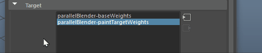

通过“绘制融合变形权重工具”(Paint Blend Shape Weights Tool)，可以使用 Maya Artisan 笔刷在基础形状上绘制融合变形权重。
请参见融合形变变形器和绘制融合形变变形器权重。
“绘制融合变形权重工具”(Paint Blend Shape Weights Tool)菜单项位于“动画”(Animation)菜单集中的“变形”(Deform)菜单下（“变形 > (绘制权重)融合变形)”(Deform > (Paint Weights) Blend Shape)）。
“绘制融合变形权重工具”(Paint Blend Shape Weights Tool)设置
有关所有 Artisan 工具公用的“绘制融合变形权重工具”(Paint Blend Shape Weights Tool)选项（如“笔刷”(Brush)、“笔划”(Stroke)和“属性贴图”(Attribute Maps)部分中的选项）的说明，请参见 Artisan 工具设置。
目标
- “目标”(Target)列表
-
列出选定基础形状的目标形状。在绘制融合变形权重时，一次只能从该列表中选择一个目标形状。如果从场景中删除任何目标形状，这些形状仍会保持列出状态并可供在该部分中进行选择。
可单击节点导航器 按钮选择输入或输出平行融合器节点。选择输入/输出平行融合器节点
- 为选定目标权重设置关键帧(Key Selected Target Weights)
-
对于为目标列表中选定的目标形状绘制的融合变形权重，为该权重设置关键帧。
绘制权重(Paint Weights)
绘制操作(Paint Operation)
绘制操作定义将目标形状权重应用于基础形状的方式。
- 替换(Replace)
-
笔刷笔划将基础形状顶点权重替换为笔刷的目标权重集。
- 相加(Add)
-
笔刷笔划将基础形状顶点权重添加到笔刷的目标权重集。
- 缩放(Scale)
-
笔刷笔划按笔刷的目标权重因子集缩放基础形状顶点权重。
- 平滑(Smooth)
-
笔刷笔划将相邻的基础形状顶点的权重平均分配以在目标权重之间生成更平滑的过渡。
- 值(Value)
-
设置要在您执行任何绘制操作时应用的目标权重值。
- 最小值/最大值
-
设置可能的最小和最大绘制值。默认情况下，可以绘制介于 0 和 1 之间的值。设置“最小值/最大值”(Min/Max Values)可以扩展或缩小值的范围。负值对于减去权重非常有用。例如，如果将“最小值”(Min Value)设置为 -1，将“值”(Value)设置为 -0.5，然后选择“添加”(Add)作为操作，则将从绘制的顶点权重中减去 0.5。正值用作倍增。
提示：为了帮助您在绘制范围大于 0 到 1（例如，-5 到 5）时区分绘制值，并在绘制值范围为 0 到 1（例如，0.2 到 0.8）时最大程度地扩大显示的值范围，请设置“最小颜色”(Min Color)和“最大颜色”(Max Color)（在“显示”(Display)部分中）以符合“最小值/最大值”(Min/Max values)。
钳制(Clamp)
选择是否要在指定范围内钳制值，而不管在绘制时设置的值如何。
- 上限(Upper)
-
启用此选项可将上限值钳制为“钳制值”(Clamp Value)。例如，如果钳制“上限”(Upper)，将上限“钳制值”(Clamp Value)设置为 0.75，然后将“值”(Value)设置为 1，那么绘制的值永远不会大于 0.75。
- 下限(Lower)
-
启用此选项可将下限值钳制为“钳制值”(Clamp Value)。例如，如果钳制“下限”(Lower)，并将下限“钳制值”(Clamp Value)设置为 0.5，则即使将“值”(Value)设置为 0.25，绘制的值也绝不会小于 0.5。
- 钳制值(Clamp Values)
-
设置要钳制的“下限”(Lower)和“上限”(Upper)值。
- 泛洪(Flood)
-
单击“泛洪”(Flood)可将笔刷设置应用于基础形状的顶点上的所有权重。结果取决于在执行泛洪时定义的笔刷设置。请参见泛洪绘制。